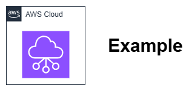

Networking Basics¶
Fundamental concepts for AWS networking. This section covers core VPC concepts, IP addressing, routing, security, and connectivity patterns that form the building blocks for all AWS network architectures.
-
AWS Prerequisites
Essential AWS knowledge needed before starting with networking.
-
Your first VPC
Setting up your first Virtual Private Cloud (VPC).
1. AWS Regions and Availability Zone considerations¶
How to distribute resources across AWS Regions, AZs, and LZs for resilience. Fundamental architectural concept that impacts region/subnet design and app availability.
2. VPC IP Addressing and CIDR Planning¶
Choosing IP ranges and avoiding conflicts, CIDR notation and subnet sizing.
3. IPv4 vs. IPv6 in VPCs¶
Dual-stack networking and protocol-specific considerations. Private vs public vs Elastic IPs. Basics of BYOIP.
4. Single VPC vs. Multiple VPCs per Account¶
When to use one large VPC vs multiple smaller VPCs.
5. VPC Sharing¶
When to use it vs separate VPCs per account. "should we share or separate?
6. Subnet Strategies¶
"how many subnets do I need?" and common patterns (public/private).
7. Elastic Network Interfaces (ENIs)¶
How EC2 instances connect to VPCs and concepts like primary/secondary IPs.
8. Route Tables and Traffic Flow¶
How routing works within VPCs and how traffic decisions are made.
9. Gateways¶
When to use virtual private gateways, internet gateway, NAT gateways, transit gateways, and Direct Connect gateways
10. Internet connectivity patterns¶
Basic internet connectivity patterns and the decision between Centralized vs distributed NAT patterns, high availability.
11. Accessing AWS services¶
When to use IGW/NAT gateway vs gateway/interface endpoints to access AWS services
12. VPC DNS Resolution, DHCP Options¶
The Domain Name System (DNS) is a standard protocol that resolves internet names to their corresponding IP addresses. A DNS hostname is a unique and absolute name for a computer, consisting of a hostname and a domain name. DNS servers translate these DNS hostnames into their corresponding IP addresses. Workloads consistently require reliable, high-performing internal name resolution (DNS) for service discovery, database connections, and inter-service communication. As an AWS architect or administrator, one of the fundamental networking components you'll work with is the Amazon DNS server, or AmazonProvidedDNS also known as the Route 53 Resolver. This DNS resolver service is natively integrated into each Availability Zone within your AWS Region, providing a reliable and scalable solution for domain name resolution within your Virtual Private Cloud (VPC).
The Route 53 Resolver is located at 169.254.169.253 (IPv4), fd00:ec2::253 (IPv6), and at the primary private IPV4 CIDR range provisioned to your VPC plus two. For example, if you have a VPC with an IPv4 CIDR of 10.0.0.0/16 and an IPv6 CIDR of 2001:db8::/32, you can reach the Route 53 Resolver at 169.254.169.253 (IPv4), fd00:ec2::253 (IPv6), or 10.0.0.2 (IPv4). Resources within a VPC use a link local address for DNS queries. These queries are transported to the Route 53 Resolver privately and are not visible on the network. In an IPv6-only subnet, the IPv4 link-local address (169.254.169.253) is still reachable as long as Route 53 Resolver is the name server in the DHCP option set. Note that the base VPC CIDR + 2 address is only available in addition to the link-local addresses when enableDnsSupport is true.
Configure VPC DNS using default settings¶
Understand and enable both enableDnsHostnames and enableDnsSupport in your VPC as these attributes determine the DNS support provided for your VPC. Understand the Rules and considerations
enableDnsHostnames: Determines whether the VPC supports assigning public DNS hostnames to instances with public IP addresses.. The default for this attribute is false unless the VPC is a default VPCenableDnsSupport: Determines whether the VPC supports DNS resolution through the Amazon provided DNS server. If this attribute is true, queries to the Amazon provided DNS server succeed.
Note the Rules and considerations for these above attributes, as they directly impact the DNS hostnames for EC2 instances and how they are resolved.
Understand DHCP option sets for your VPC¶
A Dynamic Host Configuration Protocol (DHCP) option set is a group of network settings used by resources in your VPC, such as EC2 instances, to communicate over your virtual network. It plays a critical role in managing network settings for your EC2 instances and other resources within your VPC. DHCP options control which DNS servers your EC2 instances use and what domain suffix they append to unqualified hostnames. Incorrect DHCP configuration can cause instances to query external DNS servers for internal resources, create security vulnerabilities, or fail to resolve critical services during network issues.
Each Region has a default DHCP option set. Each VPC uses the default DHCP option set for its Region unless you either create and associate a custom DHCP option set with the VPC or configure the VPC with no DHCP option set. You can associate a DHCP option set with multiple VPCs, but each VPC can have only one associated DHCP option set. Note that after you create a DHCP option set, you cannot modify it (immutable). To update the DHCP options for your VPC, you must create a new DHCP option set and then associate it with your VPC.
You can use either the Default or Custom DHCP option set, as they allow you to customize network settings like domain names, DNS servers, and more. For the Default DHCP option set, AmazonProvidedDNS is used.
If your VPC has no DHCP option set configured:
- For EC2 instances built on the Nitro System, AWS configures
169.254.169.253as the default domain name server. - For EC2 instances built on Xen, no domain name servers are configured and, because instances in the VPC have no access to a DNS server, they can't access the internet.
Key considerations include:
- Consistent Configuration: Ensure DHCP settings are consistent with your network architecture.
- Regular Reviews: Periodically review and update your DHCP configurations to align with changing network requirements.
Use Private Hosted Zones for Service Discovery Patterns¶
Many teams rely on Elastic Load Balancer (ELB) DNS names or hardcoded service endpoints instead of implementing proper service discovery through Route 53 private hosted zones. This creates fragile architectures that can break during service migrations or infrastructure changes. Without proper DNS-based service discovery, applications become tightly coupled to specific infrastructure components. When teams need to migrate databases, replace load balancers, or implement blue-green deployments, hardcoded endpoints require application code changes rather than simple DNS updates.
To access resources in your VPC using custom DNS domain names (such as example.com) instead of private IPv4 addresses or AWS-provided private DNS hostnames, you can create a private hosted zone (PHZ) in Route 53. Private hosted zones support both IPv4 and IPv6 records – you should configure both A and AAAA records for future-proofing, even if you're not currently using IPv6. It's recommended to use short TTL values (60-300 seconds) for records that might need rapid updates during deployments or failover events.
To use a private hosted zone, both enableDnsHostnames and enableDnsSupport must be set to true in your VPC configuration. It's important to understand all considerations when working with private hosted zones. Use Route 53 Profiles, centrally apply and manage DNS-related Route 53 configurations across many VPCs and in different AWS accounts. Note that Private Hosted Zones can be associated with multiple VPCs, but the VPCs must be in the same AWS Region or connected via VPC peering. Also that there are quotas to the number of private hosted zones per AWS account.
Optimize DNS query performance¶
Many teams rarely monitor or optimize DNS query performance, assuming default resolver behavior is sufficient. This oversight often leads to application latency issues that are difficult to diagnose because DNS queries aren't included in typical application performance monitoring. Excessive DNS queries can significantly impact application response times, especially in microservices architectures where services make frequent cross-service calls. Poor DNS caching strategies can amplify this impact, causing cascading performance issues during high-traffic periods.
Configure appropriate Time to live (TTL) values for your DNS records based on change frequency – use longer TTLs (3600+ seconds) for stable infrastructure records and shorter TTLs (60-300 seconds) for records that might change during deployments. Implement DNS caching at the application level for frequently queried hostnames.
While the Route 53 Resolver resolver caches queries, applications often make repeated queries due to short-lived connections or poor caching implementations. To reduce query volume, implement connection pooling and use DNS caching libraries in your applications. Use Route 53 Resolver endpoints, as they provide higher DNS queries per second (QPS).
Use Amazon CloudWatch Contributor Insights rules for DNS query analysis. You can use built-in sample rules when you create a rule or you can create your own rule from scratch. Be mindful of the cost implications of query logging, as you incur Amazon CloudWatch charges.
Use DNS monitoring and logging¶
There is a 1024 packet per second (PPS) limit to services that use link-local addresses including Route 53 Resolver. This limit includes the aggregate of Route 53 Resolver DNS queries. If you reach the quota, the Route 53 Resolver rejects traffic.
Monitor linklocal_allowance_exceeded instance level network performance metric, which is available on both Windows and Linux instances using Elastic Network Adapter (ENA). This metric indicates the number of packets dropped due to PPS rate allowance exceeded for local services such as Route 53 DNS Resolver, Instance Metadata Service, Amazon Time Sync Service. Dropped packets often indicate suboptimal design choices or misconfiguration. Note that this allowance remains constant across all instance types.
Enable Route 53 Resolver query logging for all VPCs and send logs to Amazon CloudWatch or Amazon S3 for analysis. Implement automated monitoring for unusual DNS query patterns, such as queries to suspicious domains, high-frequency queries to single domains, or queries with unusual characteristics (extremely long domain names, unusual character patterns). Use AWS Security Hub and GuardDuty to detect DNS-based threats automatically.
DNS query logs can generate significant volume – implement lifecycle policies to manage storage costs while retaining data for sufficient time for security analysis. Consider using Amazon Kinesis Data Firehose to stream DNS logs to your SIEM solution for real-time threat detection.
To monitor DNS activity, enable Route 53 Resolver query logging for all VPCs and direct logs to Amazon CloudWatch or Amazon S3 for analysis. Implement automated monitoring to detect unusual DNS query patterns, including:
- Queries to suspicious domains
- High-frequency queries to single domains
- Queries with unusual characteristics (such as extremely long domain names or unusual character patterns)
- Additionally, use AWS Security Hub and Amazon GuardDuty for automatic detection of DNS-based threats.
Since DNS query logs can generate significant volume, implement lifecycle policies to manage storage costs while retaining data long enough for security analysis. Consider using Amazon Data Firehose to stream DNS logs to your Security Information and Event Management (SIEM) solution for real-time threat detection.
Use DNS64 for IPv6-only VPC Subnets¶
DNS64, paired with NAT64, allow IPv6-only workloads in the VPC communicate with IPv4-only services outside your subnet. This is particularly useful during the transition from IPv4 to IPv6, as it allows your IPv6 services to access IPv4 resources. DNS64 is a mechanism that synthesizes AAAA records from A records to enable communication between IPv6-only clients and IPv4-only servers.
IPv6-only workloads running in VPCs can only send and receive IPv6 network packets. Without DNS64, a DNS query for an IPv4-only service will return an IPv4 destination address in response, making it impossible for your IPv6-only service to communicate with it. To bridge this communication gap, enable DNS64 for IPv6-only subnets, and it will apply to all AWS resources within that subnet. You will need to use NAT64 in your VPC with DNS64 either through Amazon Route 53 Resolver or by implementing your own DNS64 server. Regular NAT Gateway charges may apply.
A few caveats to keep in mind:
- The source IPv6 address isn’t preserved when using NAT64, which means no source-IP filtering.
- DNS64 is inherently asymmetric. It provides IPv6-only clients with synthetic AAAA records to reach IPv4-only destinations, but it cannot help IPv4-only clients reach IPv6-only services. If a domain operates in an IPv6-only environment without associated A records, IPv4-only and dual-stack clients cannot connect.
- Domain Name System Security Extensions (
DNSSEC) doesn’t work with DNS64. SinceDNSSECrelies on cryptographic signatures of DNS records, the dynamic synthesis of AAAA records by DNS64 resolvers can cause validation failures. To address this, admins must understand and potentially deploy DNS64-awareDNSSECvalidation, such as using the CD (Checking Disabled). - DNS64 and NAT64 introduce additional steps in the resolution and transport process. The DNS64 resolver must perform two lookups—first for an AAAA record and then an A record if the AAAA does not exist.
Operational Considerations¶
DNS operations in production require proactive monitoring and troubleshooting capabilities that extend beyond basic connectivity testing. Implement comprehensive logging to capture DNS query volumes, response times, and failure rates across your entire DNS infrastructure. Use Amazon CloudWatch metrics to monitor Route 53 Resolver query volumes and establish alarms for unusual patterns that might indicate service issues or security threats. Create runbooks for common DNS troubleshooting scenarios, including tools and techniques for diagnosing resolution failures at different layers of your DNS hierarchy. Consider the operational impact of DNS changes—even simple updates to DHCP option sets require instance reboots or network interface refreshes to take effect—and plan changes during maintenance windows.
Monitor your query patterns and optimize application-level DNS caching to reduce unnecessary queries. When integrating with other AWS services, remember that services like Amazon EKS and Amazon ECS have their own DNS requirements and integration patterns that can affect your overall VPC DNS design. Plan for service discovery patterns that align with your chosen container orchestration platform, and ensure your DNS architecture supports the dynamic nature of containerized workloads without creating performance bottlenecks or security vulnerabilities.
Relevant Resources¶
- DNS best practices for Amazon Route 53
- How to optimize DNS for dual-stack networks
- How do I determine whether my DNS queries to the Amazon DNS server fail because of VPC DNS throttling?
- How does DNS work, and how do I troubleshoot partial or intermittent DNS failures?
13. Security Groups vs. Network ACLs¶
Difference between these and when to use each approach.
14. Network Performance and Sizing¶
EC2 instance networking capabilities can vary based on instance family, size, and placement decisions. A common myth may that "bigger instances always mean better network performance" or that placement groups are only relevant for High Performance Computing (HPC). In reality, network performance scaling is nuanced, with considerations around burst vs. sustained performance, cross-AZ traffic patterns, and the interplay between compute, storage, and network resources.
Understanding Burst vs. Sustained Performance**¶
Many customers select instance types based on CPU and memory requirements while treating network performance as secondary. This leads to compute-optimized instances handling network-intensive workloads, or memory-optimized instances being oversized when network throughput may create the bottleneck.
Network performance scales non-linearly within instance families. For example, an EC2 c5.large instance provides 750 Mbps baseline with up to 10 Gbps burst, while a c5.xlarge instance offers the same 10 Gbps burst but delivers better sustained performance at 1.25 Gbps baseline. Mismatched ratios waste resources—you pay for unused compute while network performance constrains you, or you have abundant network capacity but insufficient compute resources to use it effectively.
EC2 instance network specifications list burst capabilities that aren’t sustained. Certain EC2 instances use baseline bandwidth with network I/O credits to burst beyond baseline on a best-effort basis. Applications exceeding baseline throughput during peak hours face performance degradation when burst credits exhaust. This can affect for e.g., batch processing workloads, database migrations, and backup operations requiring sustained high throughput.
Key Guidelines¶
- Monitor baseline and burst network performance for your specific EC2 instance type
- Instance bandwidth apply to inbound and outbound traffic, depending on destination and traffic flow patterns (single flow vs multi-flow)
- All Nitro-based instances use Elastic Network Adapter (ENA) Express for enhanced networking, powered by AWS Scalable Reliable Datagram (SRD) technology that uses dynamic routing to increase throughput and minimize latency
- Non-Nitro instance types use Enhanced Networking with Single Root I/O Virtualization (SR-IOV) for high-performance networking on supported instance types.
- Calculate sustained network throughput requirements separately from peak burst needs. For workloads requiring sustained high throughput, choose instance types where your required throughput stays at or below baseline performance. For periodic high-throughput workloads, schedule them during low-traffic periods to leverage burst capacity recovery. Consider multiple smaller instances instead of fewer larger ones to achieve better sustained aggregate throughput. Some instance types support configurable bandwidth weighting between network processing and Elastic Block Store (EBS) operations. Default baseline bandwidth settings are determined by instance type.
- The ENA driver publishes network performance metrics from enabled instances. Use these metrics to troubleshoot performance issues, choose appropriate instance sizes for workloads, plan scaling activities proactively, and benchmark applications to determine whether they maximize available instance performance.
Use Placement Groups for performance-critical workloads¶
A placement group (optional) is a logical grouping of instances within an Availability Zone that helps you to influence the placement of individual EC2 instances to meet specific requirements for performance, latency, or compliance. Placement groups are often treated as an all-or-nothing decision, with entire applications placed in cluster placement groups or none at all. In practice, the most effective approach involves selective use of different placement group types (Cluster, Partition or Spread) for different tiers of your architecture. Cluster placement groups can significantly reduce latency between instances for the same AZ communication, but they concentrate failure risk. Spread placement groups reduce failure correlation but may increase latency. Partition placement groups offer a middle ground but are frequently overlooked for database sharding or distributed system deployments.
Reduce the number of network hops for data packets. Use cluster placement groups selectively for tightly coupled components like database primary-replica pairs or application servers that perform frequent inter-node communication. Reserve spread placement groups for independent application instances behind load balancers. Leverage partition placement groups for distributed databases like Cassandra or MongoDB where you need both performance and failure isolation. Never place your entire infrastructure in a single cluster placement group—instead, create multiple smaller groups aligned with your application's communication patterns.
Placement groups can't span regions but can span AZs (except cluster type). When launching instances into an existing placement group, always use the same instance type and launch them simultaneously when possible to avoid capacity issues. If you receive placement group capacity errors, try launching in a different AZ within the same region, or temporarily launch smaller instance types and resize later.
Cross-AZ communication patterns¶
Many customers focus on high availability by spreading resources across AZs without considering the cumulative cost impact of cross-AZ data transfer. This can represent a significant portion of the total infrastructure costs for data-intensive applications.
Cross-AZ data transfer costs $0.01-0.02 per GB depending on the AWS Region, which accumulates quickly for applications with chatty microservices or frequent database replication. More critically, cross-AZ latency is typically ~1-2ms higher than intra-AZ communication, which can compound in applications making hundreds of service calls per request.
Implement AZ affinity in your application architecture where feasible. Use Application Load Balancer (ALB)/Network Load Balancer (NLB) target group attributes to enable cross-zone load balancing only when necessary—disable it for applications that can tolerate some imbalance to reduce cross-AZ traffic. For database architectures, consider read replicas in the same AZ as your primary application servers for read-heavy workloads. Design your microservices communication patterns to minimize cross-AZ calls—consider using message queues or event-driven architectures to reduce synchronous cross-AZ communication.
Use VPC Flow Logs with cost allocation tags to identify your highest cross-AZ traffic patterns. Many applications generate surprising amounts of cross-AZ traffic through health checks, monitoring agents, or chatty service meshes. Consider using AWS Local Zones for applications requiring ultra-low latency to specific geographic areas, as they can reduce both latency and data transfer costs compared to cross-AZ communication.
Implement Network Performance Monitoring and alerting¶
Network performance issues are often discovered reactively through user complaints or application timeouts rather than proactive monitoring. Many monitoring setups focus on CPU and memory utilization while overlooking network metrics that can predict performance bottlenecks. Network performance degradation often appears gradually and can be masked by application-level retries or gray failures. By the time users notice problems, the issue may have been developing for days or weeks, making root cause analysis more difficult. Set up Amazon CloudWatch network performance monitoring alerts.
Use VPC Flow Logs with Amazon CloudWatch Insights to analyze traffic patterns and identify optimization opportunities. Network performance issues often correlate with other infrastructure changes, so maintain good change management practices and baseline your network performance before and after deployments. Consider using AWS X-Ray for distributed tracing to identify network bottlenecks in microservices architectures.
Relevant Resources¶
- Amazon EC2 Instance Types Guide
- Placement Groups Best Practices
- Enhanced Networking on Linux
- EC2 Nitro networking under the hood
IPAM Basics¶
IP allocation strategies and avoiding address exhaustion
Additional resources to get started?¶
If you're new to AWS networking, it's important to get a solid foundation before diving into deployment design. We recommend starting with some basic AWS networking concepts, which are covered in this section.
For a more structured learning path, check out the official AWS training on skills builder.
Additionally, AWS Stash is a great resource for finding a wide variety of AWS content, including YouTube videos, blogs, and podcasts. You can search for specific topics, like networking, and find useful resources.
A great place to start is by watching Networking Fundamentals sessions from
past AWS re:Invent events. Here are a couple of examples:
-
AWS networking foundations from re:Invent 2023
-
Networking foundations from re:Invent 2021

Example image caption - Drawio Source